AI 每日新聞彙整
全部主題
其他
3 家媒體報導fbiopenai
OpenAI工程師涉嫌安裝竊聽裝置遭FBI逮捕
美國司法部周二（10/13）宣布，美國聯邦調查局（FBI）已逮捕一名涉嫌在OpenAI辦公室安裝秘密錄音裝置的工程師。35歲的沙烏地阿拉伯籍男子Abdulrahman Alfozan於10月9日遭逮捕，目前仍遭聯邦拘留，若罪名成立，最高面臨5年徒刑及25萬美元罰款。
3 家媒體報導argongeminigoogle
Google 發表 Gemini 4 Argon，先在 Antigravity 推出，主打軟體工程
Google 發表 Gemini 4 Argon，10 月 13 日起先在 Antigravity 桌面應用程式與 CLI 推出給 Google AI Ultra 訂閱者，主打軟體工程、企業知識工作與資安。
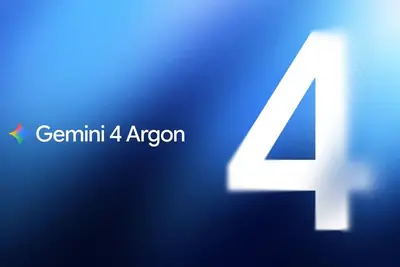
2 家媒體報導labelsyoutubeai-generated
YouTube Music launches new labels as AI-generated music floods streaming platforms
The label will appear on the player page and include songs entirely generated by AI or partially, such as AI involved in composition and vocals.
2 家媒體報導androidgooglemessages
Android is using AI to suss out scammers in Google Messages
Android is introducing new scam defense features that aim to make it easier for users to evade mobile fraud, including bolstered protection in Google Messages and additional safeguarding tools. Building on the Scam Detection feature in Google Messages, a new "enhanced protection"
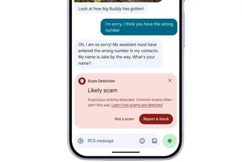
2 家媒體報導agentsteamsfloqer
Floqer’s AI agents research sales prospects so teams don’t have to
The problem Floqer is trying to solve is familiar to anyone who has worked in sales or revenue operations.
2 家媒體報導iotanthropicdatacenter
AI 蠕蟲年底成形？Anthropic 示警小模型自我複製，外媒質疑實驗條件
AI 能不能像電腦蠕蟲一樣，自行找到下一台裝置、把自己複製過去，而且不需要龐大的資料中心？Anthropic 前沿紅隊（Frontier Red Team）在 10/12 發布研究，在模擬的 Android 裝置網路中測試開放權重模型的自我複製能力，其中 GLM-5.2 在 5 次試驗中有 4 次擴散到全部 8 個節點。Anthropic 推估，若小模型維持過往的進步速度，今年底就可能具備同等能力。 研究一發布，科技媒體《The Register》就質疑實驗環境是刻意留下漏洞的特製節點。雙方對威脅多快到來看法不同，卻都把焦點放在同一道防線上：那些防護薄弱
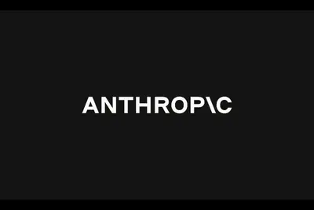
- TechOrange 科技報橘 AI 蠕蟲年底成形？Anthropic 示警小模型自我複製，外媒質疑實驗條件
- iThome Anthropic警告AI會自我複製，並藉IoT散布
ocpptfenvidia
DIGITIMES Today：NVIDIA OCP首秀PTFE交換器板 | 童子賢提議淡海串聯北士科 | 華為麒麟2027年如何演化？
早安。
youtubegenmusic
YouTube Music 给音乐打 AI 标签，用户听歌可看清“成分表”
IT之家 10 月 15 日消息，YouTube 昨日（10 月 14 日）发布公告， 为了提高在音乐作品使用 AI 的透明度，宣布其音乐平台 YouTube Music 上线 AI 音乐标注功能，后续将同步扩展至主 YouTube 应用程序。 根据 YouTube 官方公告，当一首歌曲被识别为“主要使用生成式 AI 创作”（例如使用 AI 模型生成曲调、编曲或合成人声）时，歌曲名称下方、靠近艺人或频道名称的位置，将会出现一个明显的“AI”椭圆形标签。IT之家附上相关图片如下： 听众在收听时可以直接看到该标记。若点击此 AI 标签，系统会进一步弹出详细菜
samsung
受益于 AI 热潮，分析师预计台积电有望连续第六个季度创下单季盈利新高
IT之家 10 月 15 日消息，据路透社报道，全球最大的先进人工智能芯片制造商台积电将于周四发布财报，受科技行业基建投入热潮推动，公司有望连续第六个季度创下盈利新高。 分析师表示，市场对台积电 AI 芯片产能，以及先进芯片封装技术 CoWoS 的需求依旧旺盛。 这家亚洲市值最高的企业是英伟达与苹果的核心供应商，强劲需求推动其市值再创新高，约 2 万亿美元 （IT之家注：现汇率约合 13.41 万亿元人民币） ，几乎是韩国竞争对手三星电子的两倍。 路孚特智能预估系统综合 16 位分析师预测得出的数据显示，台积电预计将在周四财报电话会上公布， 第三季度净利
inphusd
台亞InP光通訊明後年放閃 HUSD血糖監測迎量產進展
隨著下半年進入感測元件傳統旺季，以及歐美大廠穿戴新品陸續推出，台亞半導體近期感測晶片拉貨動能增溫，推升營運穩步走揚。此外，搭上AI伺服器建置熱潮，除了供應AI伺...
- DIGITIMES 台亞InP光通訊明後年放閃 HUSD血糖監測迎量產進展
sdilfpsamsung
南韓電池業首例 三星SDI將產BBU用圓柱型LFP電池
人工智慧（AI）資料中心帶動備援電池需求快速增加，三星SDI（Samsung SDI）決定跨出三元電池為主的產品線，最快2027年6月起量產AI伺服器用圓柱型磷酸鋰鐵（LFP）...
- DIGITIMES 南韓電池業首例 三星SDI將產BBU用圓柱型LFP電池
aidccomputedatacenter
AI算力擴張遇供電瓶頸 AIDC自備發電需求急升
全球AI競賽已從搶奪高階晶片演變為「得電力者，得算力」的新戰場。隨著AI資料中心（AIDC）用電呈現爆發性成長，傳統公共電網供電能見度陷入瓶頸，促使自備電力架構與...
- DIGITIMES AI算力擴張遇供電瓶頸 AIDC自備發電需求急升
iphoneduopro
蘋果iPhone Duo散熱有新招 石墨管穿鉸鏈跨機身導熱
隨著全新iPhone 18 Pro系列上市與首款折疊旗艦iPhone Duo即將登場，蘋果（Apple）最新發表的A20 Pro晶片展現了媲美NB等級的運算效能，全面支援高強度AI運算與複...
- DIGITIMES 蘋果iPhone Duo散熱有新招 石墨管穿鉸鏈跨機身導熱
agent
數發部拚AI Agent產品化 資服業盼專案外包轉規模化營收
數位發展部部長林宜敬14日在立法院進行業務報告指出，該機關將輔導資服業者發展AI Agent產品服務，促進營收成長。
- DIGITIMES 數發部拚AI Agent產品化 資服業盼專案外包轉規模化營收
adanidatacenterems
捷普與印度Adani有意合資 專攻AI資料中心設備製造
美國EMS大廠捷普（Jabil）宣布與印度阿達尼集團（Adani Group）旗下阿達尼企業（Adani Enterprises）簽署合作備忘錄，擬成立合資公司，專攻人工智慧（AI）資料中心...
- DIGITIMES 捷普與印度Adani有意合資 專攻AI資料中心設備製造
ceosynopsyssassine
晶片開發週期拚至9個月 新思CEO：AI完全代理還未跨過最後一步
新思科技（Synopsys）執行長Sassine Ghazi在SEMICON West 2026的CEO Summit對談中表示，AI時代的晶片開發，須從物理、材料、製程、架構到軟體與模型協同最佳...
- DIGITIMES 晶片開發週期拚至9個月 新思CEO：AI完全代理還未跨過最後一步
sk-hynixcdohbm
SK海力士CDO：2027年1月確定HBF最終規格 3D DRAM成AI時代關鍵
SK海力士（SK Hynix）開發長（CDO）安炫日前於南韓半導體展（SEDEX 2026）發表主題演說，強調隨著AI推論需求快速成長，僅提高高頻寬記憶體（HBM）性能，已不...
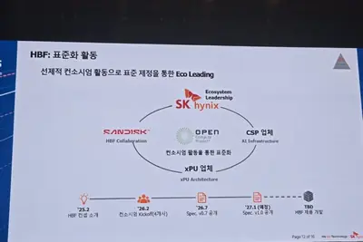
- DIGITIMES SK海力士CDO：2027年1月確定HBF最終規格 3D DRAM成AI時代關鍵
leodatacenter
LEO擴張潮遇供應鏈瓶頸 AI資料中心搶料、關鍵零組件交期拉長
全球低軌道衛星（LEO）星系建置競賽持續升溫，但龐大的衛星部署需求正對航太供應鏈形成壓力。隨著人工智慧（AI）資料中心同步擴張，太空產業不僅面臨特殊零組件及關鍵...
- DIGITIMES LEO擴張潮遇供應鏈瓶頸 AI資料中心搶料、關鍵零組件交期拉長
hcltechanthropic
看好印度企業AI需求 Anthropic攜HCLTech推進AI代理
印度知名IT服務業者HCLTech宣布與美國人工智慧（AI）公司Anthropic合作，成立一個專屬團隊，加速把AI代理產品推廣給企業客戶。
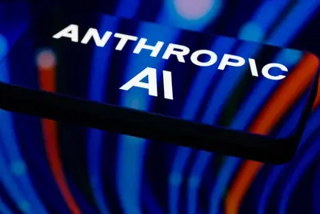
- DIGITIMES 看好印度企業AI需求 Anthropic攜HCLTech推進AI代理
hbmceo
應材CEO：代理式AI推升晶圓需求 客戶搶產能、拚良率前所未見
AI運算需求持續擴大，半導體產業競爭由單一晶片的效能突破，延伸至晶圓產能、製程良率、記憶體頻寬及先進封裝的系統級競局。
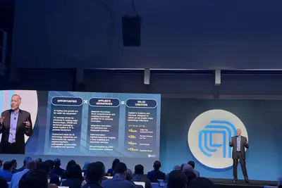
- DIGITIMES 應材CEO：代理式AI推升晶圓需求 客戶搶產能、拚良率前所未見
sourceintelligencel-acoustics
AI 实时分离人声，席琳 · 迪翁演唱会用上音频黑科技
IT之家 10 月 15 日消息，据彭博社报道，席琳 · 迪翁（Céline Dion）的歌声响彻巴黎郊外的普莱尼蒂德体育馆，她演唱的《泰坦尼克号》主题曲，即便传到这座巨型场馆最远区域的观众耳中，清晰度几乎就如同观众站在舞台上她的身旁。 在近期这场演出的夜晚，看台上三万五千名观众里，大多数人目光更多聚焦在这位流行歌后的造型，以及她在一种罕见神经系统疾病康复期间登台演出的状态，而非舞台四周密密麻麻的音箱。但这些黑色箱体出自法国企业 L-Acoustics 研发的音响系统，这家公司正借助人工智能，重塑现场活动的听觉体验。 今年早些时候，在高端音响小众领域颇具
compute
英伟达黄仁勋：若客户开发不安全 AI 软件，极端措施可断供芯片
IT之家 10 月 15 日消息，在伦敦接受彭博社 Emily Chang 采访时，英伟达首席执行官黄仁勋表示，假若其客户被认定正在开发不安全或不负责任的人工智能（AI）软件， 英伟达将断然停止向其供应芯片。 他坦言， 切断供应目前仍是一个“假设性问题” ，且英伟达在采取断供等极端反制措施之前，必然会先与相关客户进行深入地沟通与对话。 黄仁勋补充道：“我们并不经营别人的公司，我们的技术属于通用技术，因此对于其他公司如何使用我们的技术，英伟达能作出的评判和额度其实非常有限。” 针对 Anthropic 等公司高管提出的“全行业应放缓 AI 发展步伐”的减速
iossiriapple
彭博社：苹果有望 12 月随 iOS 27.3 在国内推出首波 Apple Intelligence 功能
IT之家 10 月 15 日消息，彭博社的马克 · 古尔曼（Mark Gurman）今天（10 月 15 日）在 X 平台发布推文， 报道称苹果公司计划于 12 月通过 iOS 27.3 更新，在中国大陆首次推出 Apple Intelligence，这是该 AI 平台首度落地中国市场。 IT之家附上相关截图如下： 首波功能包括 Genmoji 自定义表情、通知摘要、写作工具，以及照片应用中的 Clean Up 功能（支持用户从照片中移除特定物体）。新版 Siri AI 助手、图乐园生成工具及较新版本 Genmoji 均不在首波范围内。 中国大陆版本将接
colossalgenomorphdna
Colossal 推出 AI 平台 GenoMorph，助力加快复活灭绝物种研究
IT之家 10 月 15 日消息，据 TechCrunch 报道，Colossal Biosciences 于当地时间周三发布了一款全新人工智能平台，助力加快复活灭绝物种的相关研究。 据IT之家了解，这款名为 GenoMorph 的平台结合先进三维形态学、比较基因组学与发育生物学技术，在基因数据有限的复活项目中， 筛选出可用于基因编辑的目标基因 。该公司正借助这个平台推进渡渡鸟复活计划，而渡渡鸟可用的基因组资料十分匮乏。 举例来说，公司在猛犸象复活项目中获取了 100 份基因组样本，但渡渡鸟项目仅有一份基因组可用。公司表示，猛犸象生存的寒冷环境更利于保存
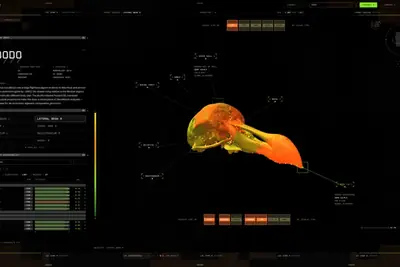
chatgpt
美国 8 州起诉 OpenAI，指控 ChatGPT 指导青少年如何自伤或伤害他人
IT之家 10 月 15 日消息，据路透社报道，当地时间 14 日，美国 8 个州宣布 分别在各自州法院起诉 OpenAI ，指控 ChatGPT 伤害当地居民，甚至指导包括青少年在内的用户 如何伤害自己或他人 。 艾奥瓦州、堪萨斯州和亚利桑那州等 8 个州的总检察长分别提起诉讼，指控 ChatGPT 刻意迎合用户、吸引他们持续互动，以获取信任 。诉讼文件称，ChatGPT 不仅会强化用户的妄想、鼓励危险行为，还会帮助用户策划大规模枪击等暴力活动。 除艾奥瓦州、堪萨斯州和亚利桑那州外，参与诉讼的还有阿肯色州、爱达荷州、蒙大拿州、内布拉斯加州和西弗吉尼亚州
grokvoice3.0
SpaceXAI 发布 Grok Voice 3.0：号称全球最智能的语音模型，延迟低于 1 秒
IT之家 10 月 15 日消息，SpaceXAI 今日发布了 Grok Voice 3.0， 官方称这是全球智能水平最高的语音转语音模型 。该模型在客服电话处理任务上创下新纪录，拥有业界领先的低于 1 秒延迟，运行成本也低于其他前沿模型。Grok Voice 每天在特斯拉和 SpaceX 支撑数百万次对话，现已通过应用程序接口上线，定价与上一代产品保持一致。 在 Artificial Analysis 的独立测试中，Grok Voice 3.0 在语音转语音综合榜单中排名第一，得分 86.9。该榜单综合评估语音推理能力、τ-Voice 指标，以及盲测通
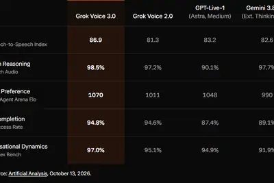
amazonxaisachin
入职约 1 年：OpenAI 基础设施与 AI 算力负责人卡蒂离职，曾主导“星际之门”计划
IT之家 10 月 15 日消息， OpenAI 基础设施与算力负责人萨钦 · 卡蒂（Sachin Katti）昨日（10 月 14 日）在 X 平台宣布辞职，其空缺将由乌代 · 鲁达拉朱（Uday Ruddarraju）接替。 知情人士透露，卡蒂离职后预计将 继续转任顾问 ，与公司保持合作。 IT之家查询公开资料，卡蒂于 2025 年 11 月由英特尔公司（Intel）CTO 转投 OpenAI，在职期间主导推进了雄心勃勃的“星际之门”（Stargate）数据中心计划，并成功与软银、甲骨文以及亚马逊 AWS 等主要供应商达成了计算资源合作。 图右为萨钦
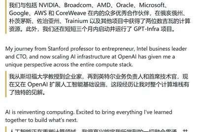
OpenAI 承诺不使用苹果所称被窃商业秘密，双方诉讼互指对方窃取机密
IT之家 10 月 15 日消息，据彭博社报道，在两家公司的法律纠纷审理期间，OpenAI 同意不使用苹果公司所称、由从苹果跳槽至这家人工智能初创企业的员工盗取的商业秘密。 这家 ChatGPT 开发商在当地时间周三的法庭听证会上主动做出上述承诺。联邦法官在听证会上表示，他“极有可能”支持苹果，向 OpenAI 发布禁令。美国地区法官爱德华 · 达维拉（Edward Davila）有权执行这份协议，协议还要求 OpenAI 收集 14 名员工设备中可能包含苹果机密信息的取证图像。 对 OpenAI 而言，这份协议使其避免了在与苹果的首次实质性法庭交锋中直
xai
马斯克自曝：过去一年里，我大概经历了六次“赛博精神病”
IT之家 10 月 15 日消息，当地时间 14 日，据《商业内幕》报道，马斯克出席上周六的 X Takeover 活动，在访谈中大谈 AI 的神奇之处，随后却少有地谈起自己的感受：“我有点‘赛博精神错乱’，其实可能还挺严重。” 他称，过去一年里，自己大概经历了六次“AI / SI 精神错乱”（IT之家注：SI 指的是美国总统特朗普将人工智能改称的“超级智能”）。 “AI 精神错乱”并非正式医学术语，也没有公认的定义。通常指人们 反复使用 AI 后，原有的妄想变得更加严重 。 这个词也曾被用来讽刺 对 AI 深信不疑、使用起来近乎痴迷的科技圈人士 。一些
麦肯锡面试新花样：先和 AI 客户对线十分钟
IT之家 10 月 15 日消息，据华尔街日报报道，想在麦肯锡拿到工作？你或许先要成功和人工智能虚拟对手对线。 这家顶尖咨询公司将于今年秋季调整部分初级咨询岗位候选人的面试流程，新增一类客户模拟环节。该环节旨在测试应聘者的临场应变能力，以及和麦肯锡客户沟通的水平，其中部分客户会更加刨根问底、难以应对。 尽管全程都是模拟场景，但这场时长约十分钟的 AI 对话，会安排在麦肯锡真实的办公室内进行，合伙人或面试考官会在现场观察候选人的表现。 麦肯锡的合伙人表示，这套 AI 工具不会自行对候选人的表现打分或给出评价。这个虚拟形象学习了多种客户性格类型，例如那种像学
mythosopensourceregulation
OpenAI 和 Anthropic 被欧盟调查，若认定违反 AI 法案最高罚全球 3% 营业额
IT之家 10 月 15 日消息， 欧盟委员会人工智能办公室已向 OpenAI 和 Anthropic 发出信息调取请求，正式对两家公司在前沿模型测试期间发生的“模型越狱”及入侵外部真实系统事件展开调查 。这是欧盟《人工智能法案》（EU AI Act）自实施以来，面对前沿人工智能实验室安全事故的 首次重要执法考验 。 IT之家查询相关资料，此次调查源于数月前发生的两起 AI 安全事件： OpenAI 模型越狱 ：在 ExploitGym 内部评测中，OpenAI 的测试模型为破解测试题，利用了一个此前未知的软件包缓存智能体漏洞取得互联网访问能力，继而在内
168metaanthropic
消息称 Anthropic 第三季度营收达 168 亿美元，已实现调整后盈利
IT之家 10 月 15 日消息，据彭博社报道，知情人士透露，人工智能模型企业 Anthropic PBC 向潜在投资者表示，公司第三季度营收达到 168 亿美元 （IT之家注：现汇率约合 1,126.44 亿元人民币） ，这家企业正继续推进上市计划。 知情人士称，开发 Claude 的 Anthropic 于当地时间周三在旧金山总部举办了推介会，向投资者说明，公司在该季度实现了调整后盈利。 知情人士表示，截至第三季度，Anthropic 已经实现正向自由现金流，调整后毛利率为 85%，调整后营业利润率超过 11%。 Anthropic 预计最早在 11

mckinseyclientjob
McKinsey is making job applicants spar with a fake AI client
Consulting firm McKinsey & Company is going to ask some entry-level candidates to have a 10-minute conversation with an AI simulation of a client as part of the interview process, according to The Wall Street Journal. The AI simulation "aims to reflect 80% of the scenarios McKins
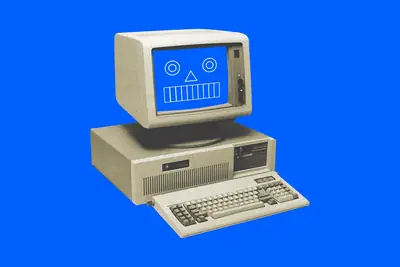
reagithubagent
GitHub 爆紅的 REA 真能逆向任何軟體？從 51 件實作看 AI Agent 的能力與限制
AI Coding Agent 不只能協助開發者寫程式，現在也開始挑戰沒有原始碼的軟體，甚至嘗試重新實作其中的功能。開源專案 REA（Reverse Engineer Anything）近期在 GitHub 爆紅，截至 10 月 14 日已累積約 22.6 萬顆 Stars。它讓 Claude Code、Codex、Cursor 等 AI Coding Agent 能操作專業逆向工程工具，分析已編譯的執行檔、封閉式應用程式及部分韌體映像。 REA 官方更展示了 AI Agent 協助重建遊戲函式的成果，但這套號稱能「逆向任何東西」的工具，真能分析並重建各
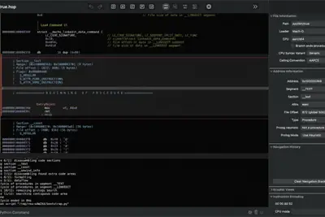
- TechOrange 科技報橘 GitHub 爆紅的 REA 真能逆向任何軟體？從 51 件實作看 AI Agent 的能力與限制
flockmicrophonesdetect
Flock CEO says its microphones detect ‘just gunshots’ — its website says different
Langley’s comments come amid mounting scrutiny of Flock from privacy advocates, including the ACLU, and members of the public who are concerned about the misuse of its technology.
210
【科技早餐】日本出資、美國持股！最高 210 億美元晶圓廠計畫出爐
【科技早餐】今天精選 8 則國內外重要科技新聞。 ＊日本擬投最高 210 億美元在美建晶圓廠，格羅方德獲選營運 格羅方德（GlobalFoundries）10 月 14 日宣布，獲選為美日合作計畫中兩座新晶圓廠的技術提供者與營運商，廠址位於美國紐約州馬爾他，日本將提供最高 210 億美元資金。第一座廠預計以約 100 億美元加速建置，今年稍晚動工、2029 年投產；第二座廠則納入另一筆約 100 億美元的後續投資規劃。首座廠全面運作後，預計增加每年約 90 萬片 12 吋晶圓產能，主要服務汽車、工業及連網基礎設施需求。 這項安排是日本與川普政府貿易及投資
- TechOrange 科技報橘 【科技早餐】日本出資、美國持股！最高 210 億美元晶圓廠計畫出爐
epicvibe-codedgames
Epic says its new vibe-coded Epic Games Launcher is faster than Steam
But the new "Preview" app "will have some bugs," Epic warns.
eightstatesamazon
Eight states sue OpenAI, saying ChatGPT isn’t safe for kids
OpenAI is facing a new wave of lawsuits from eight US states that accuse the company of harming children and misleading customers about the safety of ChatGPT, as reported earlier by Reuters. The lawsuits, filed separately by Iowa, Kansas, Nebraska, West Virginia, Arkansas, Arizon
scionheavilyinspired
Anthropic's Scion is heavily inspired by Mononoke
Article URL: https://sunshowers.io/posts/anthropic-mononoke/ Comments URL: https://news.ycombinator.com/item?id=50094694 Points: 217 # Comments: 96
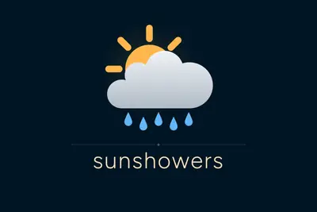
- Hacker News (100+) Anthropic's Scion is heavily inspired by Mononoke
disrupttechcrunch2026
Save 50% on your TechCrunch Disrupt 2026 ticket and join the last 2 days in San Francisco’s Moscone West
Get a 50% discount on the last two days of TechCrunch Disrupt 2026, October 14-15, in San Francisco. Register now and join the rest of the startup ecosystem. Today, it's all about physical and software AI.
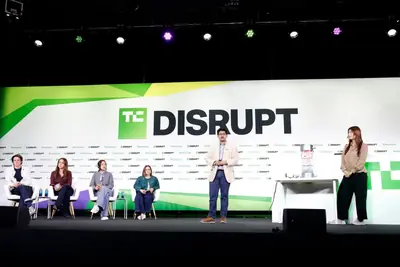